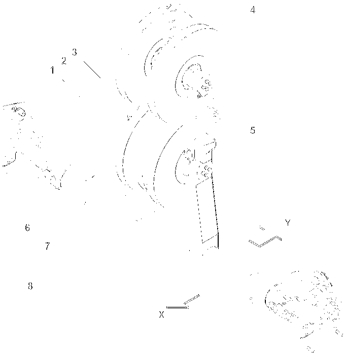

Seilführung
Die Seilführung:
– | ist ab einer vorgeschriebenen Hauptauslegerlänge einzubauen. |
– | verbessert das Wickelverhalten der Seile auf den Winden. |
– | verlängert die Lebensdauer der Seile. |

Fig. 104: Seilführung
Seilrolle für Seil der Winde1 | |
Seilrolle für Seil der Nadelausleger-Verstellwinde | |
Seilrolle für Seil der Winde2 | |
Anschlagpunkt | |
Oberer Teil der Seilführung (aufklappbar) | |
Verbolzungspunkte (2x) für Gabeln der Seilführung mit Hauptausleger-Zwischenstück | |
Verbolzungspunkte (2x) für Gabeln der Seilführung mit Seilführung | |
Gabeln (2x) der Seilführung | |
Richtung Hauptausleger-Kopf | |
Richtung Oberwagen |
Um das Einscheren der Seile zu ermöglichen, ist der obere Teil der Seilführung 5 aufklappbar.
Benennung | Wert | |
|---|---|---|
1+3 | Seilrollen für Seil der Winde1/Winde2 | 500 mm (1.64 ft) x 15 mm (0.59 in) x 90 mm (3.54 in) |
2 | Seilrolle für Seil der Nadelausleger-Verstellwinde | 450 mm (1.48 ft) x 11 mm (0.43 in) x 90 mm (3.54 in) |
B | Breite |
1790 mm 5.87 ft |
B1 | Breite (Systemmaß Hauptausleger-Zwischenstück) |
2290 mm 7.51 ft |
H | Höhe |
1595 mm 5.23 ft |
Gewicht |
243 kg 536 lb | |
Technische Daten Seilführung